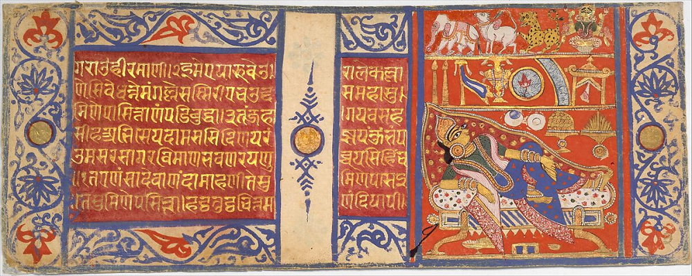

Home > Blog The Log of a Librarian > The Shape of Memory (12)
The Shape of Memory (12)
A Book Worth Giving
Manuscript Patronage in Fifteenth-Century Jain India
This post is part of a series that explores the many ways human societies have stored, transmitted, and transformed memory across time, beyond the narrow histories centered on books and writing. It approaches archives, documents, and memory systems as historically situated technologies shaped by power, ecology, material conditions, and cultural worldviews, while examining forms of transmission often excluded from dominant narratives of literacy and preservation: oral traditions, woven patterns, musical structures, ritual performances, landscapes, bodies, and other living infrastructures of memory. Check all the posts in this section's index.
A manuscript from Jaunpur
Around 1465–1466, in the northern Indian city of Jaunpur, a woman named Harṣiṇī commissioned a remarkable book. It contained eighty-six folios, forty painted illustrations, decorative borders, and writing executed in gold. Its pages measured approximately twenty-seven centimeters long and eleven centimeters high, with an elongated shape characteristic of Indian manuscript traditions.
The book was a copy of the Kalpasūtra, an important religious text of Jainism. By the fifteenth century, this work had been copied for generations, and Jain communities possessed extensive traditions of producing, preserving, studying, and reciting religious manuscripts. Harṣiṇī was paying for an unusually elaborate version of a text that was already widely known.
A colophon, a written statement recording information about a manuscript's production, identifies several people involved. Harṣiṇī was the daughter of a merchant named Sahasarāja and the wife of Kālidāsa. Together with her son Dharmadāsa, she arranged for the book to be copied on the advice of the religious teacher Jinacandrasūri. The intended recipient was another teacher, Kamalasaṃyama. The copyist, Veṇīdāsa, is identified through his father, Karmasiṃha, and his family lineage. The painter's identity remains uncertain.
The colophon provides an unusually detailed record of a fifteenth-century book commission, although it tells us nothing about the actual cost, the negotiations with artisans, or the time required to complete the work.
Why would a family invest substantial resources in an expensive new copy of an established religious text? The answer lies in the religious and social circumstances that sustained Jain manuscript production.
Books, devotion, and religious giving
Jainism is one of India's ancient religious traditions. Its teachings emphasize nonviolence, ethical conduct, self-discipline, and liberation from the cycle of rebirth. Jain communities developed extensive bodies of religious and philosophical literature, together with sophisticated practices of textual interpretation, instruction, and preservation.
The Kalpasūtra, traditionally attributed to Bhadrabāhu, occupies an important place among Śvetāmbara Jains. It contains accounts of major religious figures, especially Mahāvīra, the twenty-fourth tīrthaṅkara, alongside material concerning monastic lineages and conduct. Its importance is particularly evident during Paryuṣaṇa, an annual period of religious observance in which the text is publicly recited and explained.
Manuscripts were needed for these activities. They provided teachers and communities with access to religious literature and could be used in ceremonies, instruction, and study. But their reproduction also had a significance that went beyond supplying additional copies.
Jain traditions attached religious merit to supporting the preservation and transmission of sacred knowledge. Commissioning a manuscript and donating it to a teacher or religious institution could constitute an act of devotion. The recipient obtained a valuable book, while the donor participated in a practice understood to carry spiritual consequences.
The distinction between making a book for personal use and producing one as a gift was important. In the latter case, the intended donation influenced the purpose of the entire project, including the resources devoted to it. A manuscript might be richly decorated because the quality of the object contributed to the significance of the offering.
Religious giving depended upon relationships between monks, nuns, and lay supporters. Jain religious specialists devoted themselves to discipline, teaching, and interpretation, while laypeople maintained households, occupations, and commercial activities. Prosperous merchants and traders were particularly important in financing manuscripts, contributing to religious institutions, and supporting the development of collections.
The practice had a long history. The twelfth-century ruler Kumārapāla, remembered as an important patron of Jainism in Gujarat, was associated with the commissioning and distribution of numerous religious manuscripts and the establishment of manuscript collections. In subsequent centuries, colophons provide substantial evidence of the participation of lay donors, especially members of mercantile communities.
These gifts could also bring social recognition. The names of donors and their relatives might be recorded in the manuscripts, preserving the memory of their contributions. Religious commitment, family participation, generosity, and public recognition could coexist within the same act, although individual motives are rarely recoverable with certainty.
Harṣiṇī's gift emerged from this established culture of religious support, in which the production of books could mobilize considerable private resources.
The making of an expensive book
The physical form of Jain manuscripts had developed over many centuries. Earlier examples were commonly written on prepared palm leaves, assembled between protective covers. Paper became increasingly widespread from approximately the fourteenth century, but the traditional long, horizontal format remained influential. Many paper manuscripts consisted of separate folios kept together between covers and wrapped in cloth.
Their production involved several kinds of specialized labor. Scribes copied texts, sometimes adding headings, divisions, corrections, or other features intended to assist reading. Illustrators painted religious scenes and decorative elements. Other workers might prepare writing materials, pigments, covers, and protective wrappings.
The precise organization of this work varied. Copying could take place within religious communities, but professional artisans were also involved, particularly in projects requiring extensive illustration or elaborate decoration.
The Jaunpur Kalpasūtra demonstrates the artistic sophistication such projects could achieve.
Its forty illustrations followed conventions established in western India, especially Gujarat and Rajasthan, where Jain manuscript painting had developed over several centuries. Religious figures, episodes from sacred narratives, miraculous events, and scenes involving teachers appeared repeatedly in these traditions.
By the fifteenth century, the associated artistic practices had reached other parts of India. The Jaunpur manuscript preserves recognizable features of western Indian painting while reflecting influences circulating through northern India, including elements associated with Persianate artistic traditions.
One surviving folio, now in the Metropolitan Museum of Art in New York, depicts the fourteen auspicious dreams of Devānandā, whose story belongs to the account of Mahāvīra's birth. The dreams appear as emblems arranged above a bedchamber scene. The painting includes gold and an intense ultramarine derived from lapis lazuli.
The result brings together a Jain religious narrative and artistic techniques and conventions that had circulated across substantial geographical distances. Its materials, colors, and elaborate pictorial program testify to the resources available to the manuscript's makers.
They also raise questions about the organization of the work. Who selected the artistic program? Were the painters employed together with the copyist, or did they work separately? How were the materials obtained? Who supervised the different stages of production?
The surviving documentation does not answer these questions. Nor does it establish whether Harṣiṇī personally decided on the use of gold, the number of illustrations, or the style of the paintings.
What the manuscript does reveal is the range of resources required to produce an elaborate religious book. Financial support had to be brought together with writing materials, technical expertise, artistic conventions, and the labor of skilled workers.
The person who paid for a manuscript did not necessarily participate directly in its physical construction. Nevertheless, without the commission, those skills and materials would not have been assembled to produce this particular object.
A woman behind the commission
The identification of Harṣiṇī as a patron is especially significant because the history of manuscript production often concentrates on authors, scribes, painters, and religious institutions. The people whose decisions financed the work can be more difficult to identify.
Women participated in Jain religious patronage, although the surviving records do not always allow their activities to be reconstructed in detail. Some colophons identify women as donors or commissioners, and occasionally as participants in manuscript copying.
The Jaunpur inscription places Harṣiṇī within a merchant household, describing her through her father and husband. Yet it also associates her directly with the production and donation of the book.
This does not tell us how much authority she exercised over the family's resources, how responsibilities were divided between her and Dharmadāsa, or what considerations led her to undertake the commission. The colophon records her participation without providing a personal account of her intentions.
It does, however, reveal the relationships surrounding the gift. Religious advice played a role in initiating the work, and the manuscript was produced for a named recipient. Such arrangements connected lay households with teachers and religious institutions, allowing economic resources to support activities associated with the transmission of sacred literature.
From religious gift to historical evidence
Once produced, Jain manuscripts could enter collections known as bhandāras, associated with religious institutions and communities. These collections developed over long periods through donations and other forms of acquisition.
Books might be consulted by teachers, used during religious observances, or carefully stored between occasions of use. Their preservation required continuing attention to fragile materials, including paper, pigments, protective coverings, and the physical conditions in which manuscripts were kept.
Such collections became important repositories of religious literature. Their surviving contents also preserve evidence of the people and activities that sustained manuscript production, although loss, damage, and dispersal have inevitably altered the historical record.
The Jaunpur Kalpasūtra was eventually catalogued as number 1400 in the Hamsavijayaji Collection at Baroda. Surviving folios have also become known through museum collections and art-historical research. Their study has contributed to our understanding of fifteenth-century Jain manuscript painting, the geographical circulation of artistic conventions, and the interpretation of manuscript colophons.
The book also preserves a record of the circumstances of its own creation. Its eighty-six folios were made through the work of skilled artisans, financed by members of a merchant household, and intended as a religious donation.
More than five centuries later, Harṣiṇī's name remains attached to that history. We know almost nothing about her life beyond what the colophon records, but we can identify her role in producing an object that has survived for generations.
The manuscript offers a particularly clear example of how books could originate through relationships among people who possessed different kinds of resources and expertise. Some knew how to reproduce the text. Others could illustrate and decorate its pages. Religious teachers advised and received donations. Patrons provided the means to have the work carried out.
The Kalpasūtra already existed. What Harṣiṇī helped create was one particular copy, distinguished by its extraordinary decoration and by the record of the people whose participation made it possible.
Bibliography
- Balbir, Nalini (2017). "The Cambridge Jain Manuscripts: Provenances, Highlights, Colophons." In Vincenzo Vergiani, Daniele Cuneo, and Camillo Alessio Formigatti (eds.), Indic Manuscript Cultures through the Ages: Material, Textual, and Historical Investigations, 47–76. Berlin/Boston: De Gruyter.
- Balbir, Nalini (2022). "On the Syntax of Colophons in Jain Palm-Leaf and Paper Manuscripts from Western India." In Nalini Balbir and Giovanni Ciotti (eds.), The Syntax of Colophons: A Comparative Study across Pothi Manuscripts, 119–148. Berlin/Boston: De Gruyter.
- Guy, John (2012). "Jain Manuscript Painting." Heilbrunn Timeline of Art History. New York: The Metropolitan Museum of Art.
- Khandalavala, Karl, and Moti Chandra (1962). "An Illustrated Kalpasūtra Painted at Jaunpur in A.D. 1465." Lalit Kalā, 12, 9–16.
- Shah, Umakant P. (ed.) (1978). Treasures of Jaina Bhaṇḍāras. L. D. Series, 69. Ahmedabad: L. D. Institute of Indology.
- The Metropolitan Museum of Art (n.d.). "Devananda’s Fourteen Auspicious Dreams Foretelling the Birth of Mahavira: Folio from a Kalpasutra Manuscript." Master of the Jaunpur Kalpasutra, ca. 1465. Accession no. 1992.359.
- Philadelphia Museum of Art (n.d.). "Mahavira’s Initiation (recto); Mahavira Assaulted by the Cowherds (verso)." Folio from a manuscript dated 1465. Accession no. 101274.